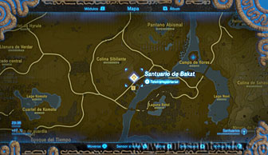
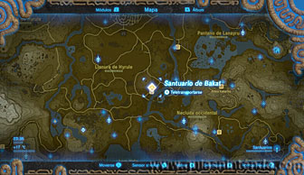
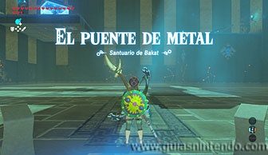
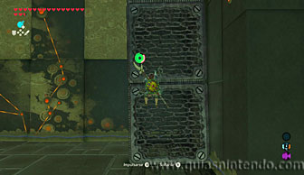
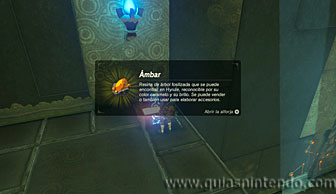
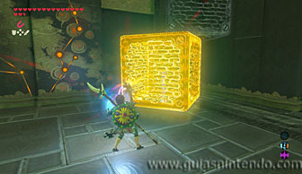
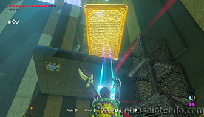
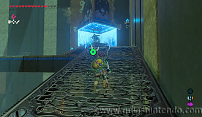

Puedes entrar en este santuario desde que llegas a la región de la torre de la llanura. Está al norte de la Posta del río.

El altar se encuentra muy alto y encuentras tres grandes bloques de metal que puedes escalar (y moverlos con el imán).

Lo primero que debes hacer es escalarlos para llegar a un cofre que contiene un trozo de Ámbar.

Después mueve los bloques con el módulo imán y crea una columna cerca de la plataforma donde se encuentra el altar. Después busca en el suelo y encontrarás otra placa de metal. Debes colocarla a modo de puente entre los bloques que has colocado y la plataforma del altar.

Ahora escala los bloques y pasa por encima de la placa de metal que has colocado para alcanzar el altar. Cuando llegues a él podrás examinarlo para obtener un símbolo de valía.
